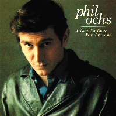

A Toast To Those Who
Are Gone
Releases
Date Label Number Country Format Comments
---- ----- ------ ------- ------ --------
1986 Rhino R2 70080 US CD
1986 Rhino RNLP70080 US LP
- Do What I Have To Do (2:36)
- Billie Sol (2:24)
- Colored Town (3:00)
- A.M.A. Song (2:17)
- William Moore(3:07)
- Paul Crump (3:34)
- Going Down To Mississipi
(3:04)
- I'll Be There (2:10)
- Ballad of Oxford (Jimmy
Meredith) (2:51)
- No Christmas in
Kentucky (3:04)
- A Toast to
Those Who Are Gone (3:31)
- I'm Tired (2:20)
- City Boy (1:58)
- Song of my Returning (5:17)
- The Trial (2:44) (CD bonus track)
Liner notes
[...]
By Sean Penn
[...]
This album is lovingly dedicated to Phil's most wonderful
creation -- Meegan Ochs.
By Michael Ochs
Back to the Phil Ochs web page
Last modified 18 Oct 98 by trent